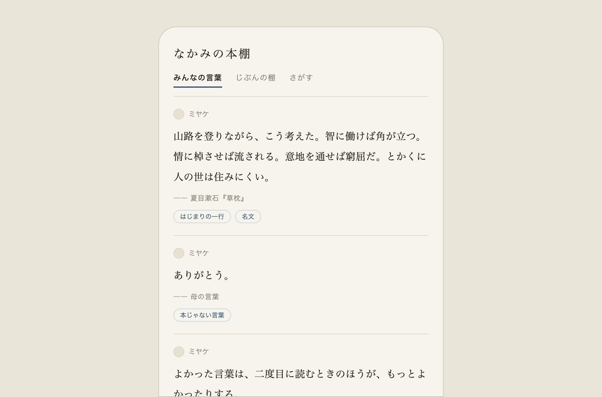

INDIE MAKER — ENTERTAINMENT
好きなエンタメの、楽しみ方のほうをつくっています。

読んで線を引いた言葉を、しまっておく場所。本の一行も、母の一言も、同じ棚に。静かに使える読書アプリです。
水墨画が、ゆっくり動きつづける。眺めるためだけのアプリ。買い切り、広告なし、通知なし。
中学からの同級生と、30代の仕事・お金・暮らしをゆるく話しています。75回配信中。
Jリーグを観に行く人のための、実用の観戦ガイド。全国のスタジアムを取材と実測で。
迷いやすいところに、根拠のある道しるべを。
訪日旅行者向けの実用ツール群。こちらは英語のみ。